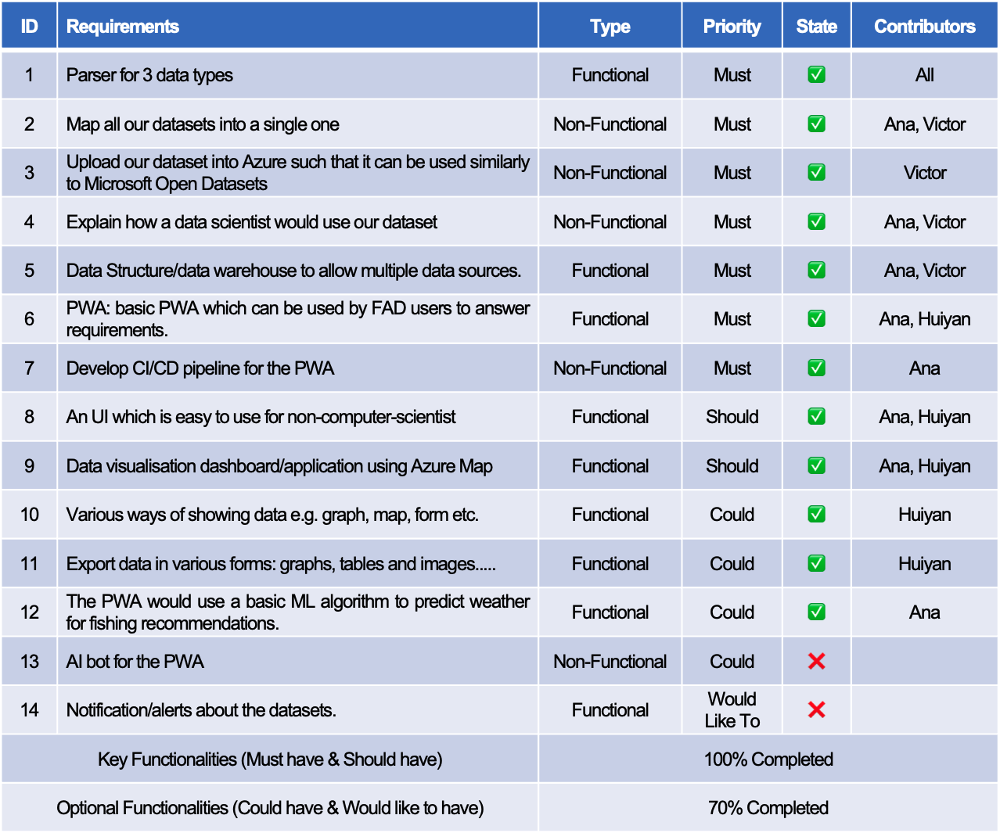
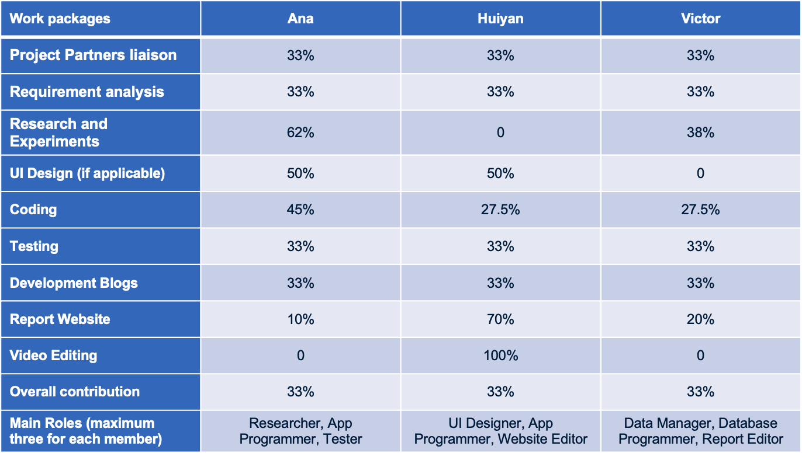

Summary of Achievements
Achievement Table:
Individual Contribution Table:
Critical Evaluation of the Project
UI & Functionality -- Feedbacks from Project Partners and Clients
Because we regularly met with our project partners, we had the change to incrementally improve our solution based on their feedback.
After showing the map visualisation to our partners, they suggested that users should be able to customize the page style. As an example of how that can be achieved, we added a colour selector, which allows dynamically changing the background.
Additionally, we presented the product to the Invictus FAD Team from Saint Lucia. They were pleased that the product is flexible, easy to extend and use, while the solution architecture can be adapted for their needs.
Efficiency
The data pipeline automates the process of downloading, processing, uploading and storing the dataset, leading to an efficient workflow for data scientists.
The Azure function is a serverless solution that automatically detects any creation of blobs within a container. When a blob is created, it triggers the function such that the function converts content inside the blob to table storage in less than 5 seconds.
The progressive web app is rapidly loading, as it uses a service worker that caches the content of the app. Thus, when fetch events are triggered, the service worker will try to send back the resource from the cache. The request will be sent to the server only if the resource is not cached.
Additionally, the first version of the API queried data from a local file, and thus required around 30 seconds to load the table, graphs or map visualizations and information. In the second version, the API fetched the data from the database (Azure Table Storage), which allowed efficiently querying data. Thus, now, the content of the app loads seamlessly.
Compatibility
Compatibility and flexibility were very important for our project, as we expect it to be extended in the future.
The parsing stage, included in the data pipeline can be executed on Window, Linux or MAC OS. The progressive web app is deployed on the web and can be installed on desktop and mobile. To show that AI insight could be integrated into our data pipeline, we implemented a machine learning model which augmented the dataset with predicted weather.
Stability
To ensure a smooth development of the progressive web app, we build a CI/CD pipeline using Azure DevOps. The pipeline will run the latest version of the repository, execute the build and testing scripts. If one stage fails, the pipeline will report it as an email to the team members. Similarly, the release pipeline will take the artefact of the build and deploy it to an Azure App Service.
Project Management
The management of the project is essential because the team is offered limited number of credits on Azure Service. Apart from it, the core goal of Project 15 is to be Low Cost of Deployment. Thus, the project has to be managed cost-effective. The project acquires an Azure resource group to be created. Inside the group, a storage account, a map account and other relevant resources are acquired. The choice on type of storage is made to be Blob, since it is relatively cheaper but effective compared to others.
Maintainability
Since all essential information were stored in Azure, the maintenance of Azure is on high priority. The Azure service itself, protects the data stored from stolen by non-permitted users. The Service would check for non-authenticated access to any Storage. It protects users’ privacy, where inside storage account -> access-keys, the connection strings are hidden. If the connection string is misused, it can be regenerated such that the previous string no longer works. However, there could be privacy leakage by users. The team have added documentations in doc folder where outlines how to deploy our project. Inside them, there are instructions on setting up environment variables or configurations to run our project. These environment variables are essentially user’s connection string, which would not be pushed to GitHub due to existence of .gitignore file.
Future Work
One big area of improvement would be in the fields of AI. For instance, leveraging our data pipeline, better ML models can be developed for augmenting or analyzing data. Our solution diagram shows how AI algorithms can be integrated, without changing the overall infrastructure. To provide an example, we implemented a simple weather prediction algorithm.
Additionally, real data from IoT devices can be connected to the existing workflow. Monitoring the devices can be done using the PWA insights and visualizations, and appropriate actions can be taken. For example, the app can be enhanced by adding notification or alerts about the datasets. If there is a broken FAD found, it will be reported to the user. Alerts could be displayed to users when the population for an oceanic species dropped significantly.